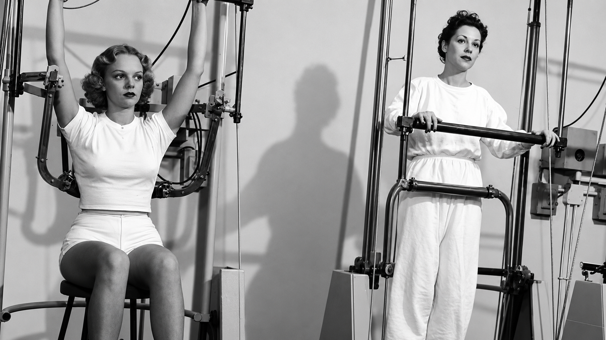

POR QUE ESTE TEMA?
PELO BEM ESTAR DO MUNDO
Nossa ideia
Nossa equipe criou este projeto com o intuito de ajudar as pessoas a terem uma vida mais saudável e a aprenderem como aprimorar seu condicionamento físico. No mundo em que vivemos hoje, com processos cada vez mais automatizados e alimentos cada vez mais industrializados, torna-se mais necessário do que nunca cuidar do bem-estar físico e da saúde das pessoas.
SOBRE AS ACADEMIAS
UMA BREVE HISTÓRIA
Origem das academias
As academias têm suas origens na Grécia Antiga, onde espaços destinados à prática de exercícios físicos eram utilizados não apenas para o desenvolvimento do corpo, mas também para a educação e a formação intelectual dos cidadãos. O termo "academia" surgiu a partir da Academia de Platão, uma instituição dedicada ao ensino e à filosofia. Com o passar dos séculos, os locais voltados ao treinamento físico evoluíram até se tornarem as academias modernas que conhecemos hoje.
Atualmente, as academias desempenham um papel importante na promoção da saúde e da qualidade de vida. A prática regular de exercícios físicos ajuda a prevenir doenças cardiovasculares, obesidade, diabetes e diversos outros problemas de saúde. Além dos benefícios físicos, a atividade física também contribui para a redução do estresse, da ansiedade e para a melhoria da autoestima.
Embora seja possível se exercitar em outros ambientes, as academias oferecem estrutura, equipamentos e acompanhamento profissional que facilitam a adoção de hábitos saudáveis. Por isso, elas se tornaram uma ferramenta valiosa para o bem-estar da população, contribuindo para uma vida mais ativa, saudável e equilibrada.
